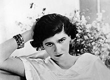

Gabrielle Bonheur Chanel was born in 1883 to an unmarried mother, Eugénie
Jeanne Devolle—known as Jeanne—a laundrywoman, in the charity hospital run by
the Sisters of Providence (a poorhouse) in Saumur, Maine-et-Loire, France. She
was Jeanne's second child with Albert Chanel; the first, Julia, was born less
than a year earlier. Albert Chanel was an itinerant street vendor who peddled
work clothes and undergarments, living a nomadic life, traveling to and from
market towns. The family resided in rundown lodgings.
In 1884, he married Jeanne
Devolle, persuaded to do so by her family who had "united, effectively, to pay
Albert to marry her." At birth, Chanel's name was entered into the official
registry as "Chasnel". Jeanne was too unwell to attend the registration, and
Albert was registered as "travelling". With both parents absent, the infant's
last name was misspelled, probably due to a clerical error. The couple had five
children who survived—two boys and three girls—who lived crowded into a one-room
lodging in the town of Brive-la-Gaillarde.
When Gabrielle was 12, her mother died of bronchitis at the age of 32. Her
father sent his two sons out to work as farm laborers and sent his three
daughters to the Corrèze, in central France, to the convent of Aubazine, which
ran an orphanage.
Its religious order, the Congregation of the Sacred Heart of
Mary, was "founded to care for the poor and rejected, including running homes
for abandoned and orphaned girls".It was a stark, frugal life, demanding strict
discipline. At age eighteen, Chanel, too old to remain at Aubazine, went to live
in a boarding house set aside for Catholic girls in the town of Moulins.
Later in her life, Chanel would retell the story of her childhood somewhat
differently; she would often include more glamorous accounts, which were
generally untrue.
She said that when her mother died, her father sailed for
America to seek his fortune, and she was sent to live with two aunts. She also
claimed to have been born a decade later than 1883 and that her mother had died
when she was much younger than 12.
Having learned the art of sewing during her six years at Aubazine, Chanel was
able to find employment as a seamstress. When not plying her needle, she sang in
a cabaret frequented by cavalry officers.
Chanel made her stage debut singing at
a café-concert (a popular entertainment venue of the era) in a Moulins pavilion,
"La Rotonde". She was among other girls dubbed poseuses, the performers who
entertained the crowd between star turns. The money earned was what they managed
to accumulate when the plate was passed among the audience in appreciation of
their performance.
It was at this time that Gabrielle acquired the name "Coco",
possibly based on two popular songs with which she became identified, "Ko Ko Ri
Ko", and "Qui qu'a vu Coco", or it was an allusion to the French word for kept
woman, cocotte. As a cafe entertainer, Chanel radiated a juvenile allure that
tantalized the military habitués of the cabaret
In 1906, Chanel was working in the spa resort town of Vichy. Vichy boasted a
profusion of concert halls, theatres and cafes where she hoped to achieve
success as a performer.
Chanel's youth and physical charms impressed those for
whom she auditioned, but her singing voice was marginal and she failed to find
stage work. Obliged to find employment, she took work at the "Grande Grille",
where as a donneuse d'eau she was one of the females whose job was to dispense
glasses of the purportedly curative mineral water for which Vichy was renowned.
When the Vichy season ended, Chanel returned to Moulins, and her former haunt
"La Rotonde". She now realised that a serious stage career was not in her
future.